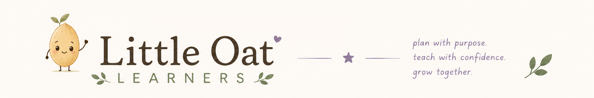
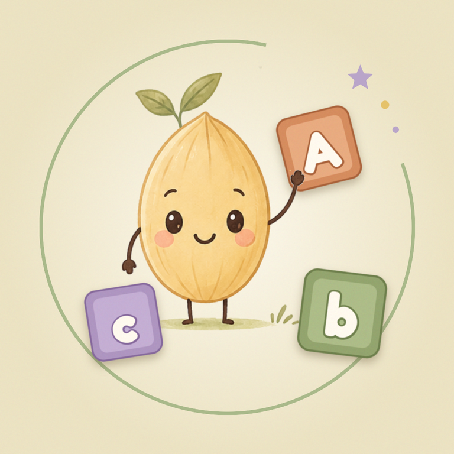

Phonics flashcards for homeschool families, Kindergarten through 5th grade — 47 decks and 593 cards, from letter sounds and short-vowel words to Greek and Latin roots. Your child reads aloud or listens and chooses, cards come back at the right time until they’re mastered, and each student’s progress is there when you want it. No account, no ads, and everything stays on your phone.

Get the app
Store availability as of October 17, 2026.
Or $20 a year for Little Oat Phonics Plus, with a 14-day free trial that starts when you choose a plan. Everything is included in the trial: every deck from Kindergarten to 5th grade, every student, and the full progress insights. After it, practice needs Plus — but a student’s progress, figures and backups are never locked away. Billed through the App Store or Google Play; cancel anytime in your store settings.
Letter names and sounds, short-vowel CVC words, Dolch-style sight words (K–3), digraphs, blends, silent e, endings, vowel teams, bossy r, diphthongs, soft c and g, compound words, trigraphs, silent letters, prefixes, suffixes, syllable types, -tion and -sion, Greek and Latin roots, and advanced suffixes.
Add each child with their own progress. Each student’s page opens on a dashboard: a progress ring for their grade, lessons completed and this week, practice time, cards mastered, 7-day accuracy and cards due — tap Lessons for every lesson, what it covered and what was missed. Insights add accuracy trends, a 14-day chart of lessons completed, mastery by grade and by deck, and cards that need practice. Set up a lesson as a random set of any size or pick the exact cards, and mark any card mastered or new by hand.
There’s no account, and everything stays on your device. Backup & export writes a backup file you save to iCloud Drive, Google Drive, Files or email, and restore on a new phone — backups are always free. You can also export CSV files of progress by deck and of every answer.
Settings, purchases, backups, and adding or editing students sit behind a quick times-table question, so little hands stay on the flashcards.
No analytics, no advertising and no tracking. The only online service is RevenueCat, which checks whether a subscription is active. Cards are spoken by your device’s built-in voice, and the app never uses the microphone.
Oat, Cocoa, Honey, Rose, Ember, Sage and Fig — each in light and dark mode, or set to follow your phone automatically.